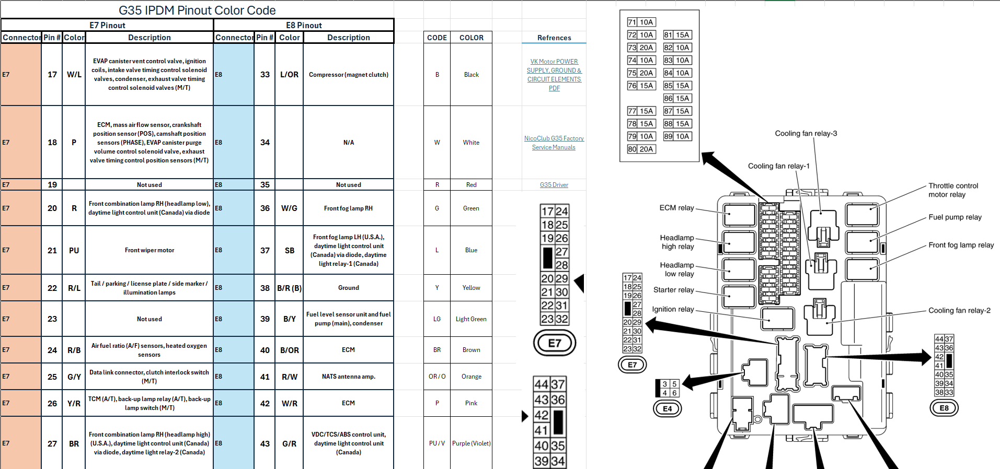

Background
I was born in Paris, France, and spent my early childhood moving between Europe and the United States before settling in Colorado. Growing up across different cultures and environments helped me become adaptable, observant, and comfortable working with many types of people. Those experiences continue to shape how I approach engineering, teamwork, and communication.
Today, I am a Mechanical Engineering student at Colorado State University with a strong interest in design, manufacturing, fabrication, and automotive systems. I enjoy building projects that combine technical problem-solving with hands-on work, and I try to carry that mindset into everything from coursework to personal projects.
Chef Life
Before focusing fully on engineering, I worked in high-end restaurants in Boulder and developed a deep respect for the discipline of professional kitchens. I worked in environments where consistency, timing, preparation, and accountability mattered every single day. That experience taught me how much strong systems and attention to detail affect the quality of the final product.
Working as a chef also helped me get comfortable performing under pressure. In a kitchen, there is very little room for hesitation, poor communication, or sloppy execution. That same mindset has carried over into my academic and engineering work, where process, precision, and reliability matter just as much.

G35 LS1 Swap
One of the biggest projects outside the classroom is my Infiniti G35 drift car, which is currently undergoing an LS1 swap. This project has given me direct experience with mechanical assembly, electrical troubleshooting, wiring integration, and overall system packaging. It has also pushed me to better understand how engine, chassis, and supporting systems must work together as one complete vehicle.
Beyond just installing parts, the swap has involved real engineering judgment. I have had to think carefully about routing, fitment, packaging constraints, and electrical logic, especially when working through components like the dashboard and IPDM wiring. The project has made me better at diagnosing problems, breaking large tasks into manageable steps, and staying patient through complex fabrication and integration work.


